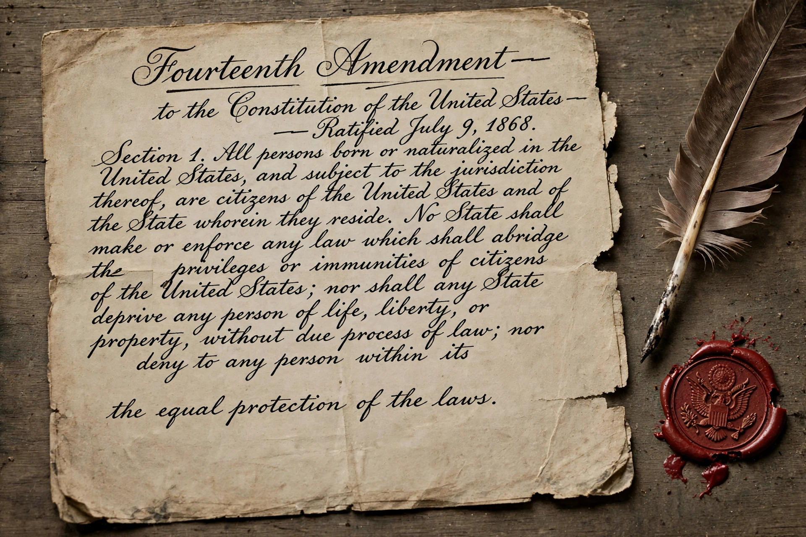

Privileges or Immunities Clause
| Privileges or Immunities Clause | |
|---|---|
 | |
| Part of | Fourteenth Amendment |
| Ratified | 9 July 1868 |
| Key case | Slaughter-House Cases (1873) |
The Privileges or Immunities Clause is the first sentence of Section 1 of the Fourteenth Amendment to the United States Constitution:
"No State shall make or enforce any law which shall abridge the privileges or immunities of citizens of the United States."
The clause was intended by its principal drafter, Representative John Bingham of Ohio, to protect the fundamental rights of national citizenship against state infringement, including, in the view of many scholars, applying the Bill of Rights against the states.
The Slaughter-House Cases
In the Slaughter-House Cases (1873), the Supreme Court read the clause extremely narrowly, holding that it protected only a small set of rights arising from national citizenship itself — such as the right to travel to the seat of government and to protection on the high seas — and not the broad civil rights claimed by the Louisiana butchers who brought the case. Justice Samuel Miller's majority opinion distinguished sharply between state citizenship and United States citizenship.
The decision is widely regarded as having rendered the clause largely a dead letter, and the Court instead accomplished the incorporation of the Bill of Rights against the states through the Due Process Clause of the same amendment.
Later developments
In Saenz v. Roe (1999), the Court relied on the clause to protect one component of the right to travel: the right of newly arrived citizens to be treated equally with longer-term residents of a state. Legal scholars across the spectrum, and dissenting justices in McDonald v. City of Chicago (2010), have argued that the clause is the proper textual home for incorporation, prompting continuing debate about reviving it.